ricardd@mathstat.dal.ca [cor1]Corresponding author: Tel: 902-494-2146, Fax: 902-494-3736 [fn2]Current Address: Marine and Freshwater Research Centre, Galway-Mayo Institute of Technology, Dublin Road, Galway, Ireland [fn3]Current Address: National Center for Ecological Analysis and Synthesis, UCSB, 735 State St. Suite 300, Santa Barbara, CA 93101, USA [fn4]Current Address: Institute of Marine and Coastal Sciences, Rutgers University, 71 Dudley Road, New Brunswick, NJ 08901-8525, USA
To facilitate global analyses of population dynamics and the status of
fished species, we have assembled a new database, the RAM Legacy
Database, of the most intensively studied commercially exploited
marine fish stocks. Results from assessment models, including time
series of total biomass, spawner biomass, recruits, fishing mortality,
and catch; reference points; and ancillary information on the life
history, management, and assessment methods for each stock. Here, we
present the first overview of this database and use it to evaluate the
knowledge-base for assessed marine species. Assessments were
assembled for 324 stocks
(288 fish species representing
45 families, and 36
invertebrate species representing 12
families), including 8 of the world's 10 largest fisheries.
Assessments were obtained from 18 national and international
management institutions, with most coming from North America, Europe,
Australia, New Zealand and the high seas. Stocks present in the
database come from 31 Large Marine Ecosystems
and cover the Atlantic, Pacific, Indian, Mediterranean, Arctic and Antarctic
Ocean. Reference points were available or could be calculated for
about 74% of these stocks. The available
data provide new insight into the status of exploited populations,
57% of stocks with reference points
were estimated to be below  , and
29% had exploitation levels
estimated to be above
, and
29% had exploitation levels
estimated to be above  . Assessed marine fish stocks comprise
a relatively small proportion of harvested taxa (24%), and an even
smaller proportion of marine fish biodiversity (1%). We hope that
access to the database will facilitate new research into life
histories, population dynamics and the effects of fishing and
encourage further data contributions from stock assessment scientists.
. Assessed marine fish stocks comprise
a relatively small proportion of harvested taxa (24%), and an even
smaller proportion of marine fish biodiversity (1%). We hope that
access to the database will facilitate new research into life
histories, population dynamics and the effects of fishing and
encourage further data contributions from stock assessment scientists.
Keywords: marine fisheries, meta-analysis, population dynamics models, relational database, stock assessment, synthesis.
Marine wild capture fisheries provide more than 80 million tons of fisheries products (both food and industrial) per year and employ 43.5 million people (wild capture and aquaculture, FAO:sofia). At the same time, fishing has been recognized as having one of the most widespread human impacts in the world's oceans Halpern:etal:2008:science, and the Food and Agricultural Organization of the United Nations (FAO) estimates that two-thirds of fish stocks globally are fully exploited or overexploited FAO:sofia. While many fisheries have reduced exploitation rates to levels that should in theory promote recovery, overfishing continues to be a serious global problem Worm:etal:2009:science. Fishery managers are asked to address multiple competing objectives, including maximizing yields, ensuring profitability, reducing bycatch, and minimizing the risk of overfishing. Given the large social and economic costs Rice:etal:2003:icescm and ecosystem consequences Frank:etal:2005:science, Myers:etal:2007:science of collapsed fisheries, it is imperative that we are able to quickly learn from successful and failed fisheries from around the world.
Effective management of exploited fish populations generally requires an understanding of where the current size and harvest rate lie in relation to the size and rate which maximize fishery benefits or limit the risk of overfishing. This process of quantitative determination of stock status and estimation of reference points is called stock assessment. Some fisheries in developing countries have apparently provided sustainable yields for long periods of time without formal stock assessment (e.g. many community-managed fisheries in Oceania; [51998Dalzell]). This sustainability has been achieved by limiting harvest rates, often through gear restrictions or seasonal and area closures. In modern industrialized fisheries, however, where fishing capacity often exceeds the productivity of fished stocks, stock assessment is an integral component of responsible management Hilborn:Walters:1992.
The global databases of fishery landings compiled by [112009aFAO] and extended by the Sea Around Us project Watson:etal:2004:fandf have proven to be valuable resources for understanding the status of fisheries worldwide; however, catch data alone can be misleading when used as a proxy for stock size. Many papers have used these data to examine changes in fishery status Worm:etal:2006:science, Costello:etal:2008:science, including changes in trophic level Pauly:etal:1998, Essington:etal:2006:procnatacadsci, Newton:etal:2007:currentbiol. Most of these analyses rely (either explicitly or implicitly) on the assumption that catch or landings is a reliable index of stock size. Critics have pointed out that catch can change for a number of reasons unrelated to stock size, including changes in targeting, fishing restrictions, or market preferences deMutsert:etal:2008:pnas, Murawski:Methot:Tromble:2007:science, Hilborn:2007:science, Caddy:etal:1998:science. Standardizing catch by the amount of fishing effort (catch-per-unit-of-effort, CPUE) is an improvement, particularly when these data are modeled to account for spatial, temporal, and operational factors affecting the CPUE Maunder:punt:2004:fishres, but CPUE can still be an unreliable index of relative abundance since it is difficult to account for all relevant factors Hutchings:Myers:1994:cjfas, Harley:etal:2001:cjfas, Walters:2003:cjfas, Polacheck:2006:marpol.
Stock assessments consider time series of catch along with other sources of information such as: natural mortality rates, changes in size or age composition, stock-recruitment relationships, and CPUE coming from different fisheries and/or from fishery-independent surveys. Because they integrate across multiple sources of information, stock assessment models should provide a more accurate picture of changes in abundance than catch data alone Sibert:etal:2006:science, the trade-off being that their complexity renders them difficult for non-experts to evaluate. Without a current and comprehensive database of stock assessments, however scientists wishing to conduct comparative analyses of marine fish population dynamics and fishery status have little choice but to use problematic catch data.
The first global database of stock assessment information, the Myers
Stock Recruitment Database, was developed by the late Ransom A. Myers
and colleagues in the mid-1990s Myers:etal:1995:summary.
While the database was primarily known for its time series of stock
and recruitment, it did contain time series of fishing mortality rates
for many stocks; biological reference points were however largely
absent. The original release version of the Myers database
Myers:etal:1995:summary included spawning stock size and
recruitment time series for 274 stocks representing 92 species as well
as fishing mortality rates time series for 144 stocks. The number of
entered stocks grew to approximately 642 stocks (509 with at least one
SR pair) by 2005. Note that anadromous fishes
of the family Salmonidae comprised 290 assessments in the original
database. The assessment results collated by Dr. Myers were used to:
![\begin{inparaenum}[1\upshape )]\item decisively answer the question of
whether ...
...lborn:1997:csiro,
Hutchings:2001:cjfas, Hutchings:2001:jfishb} \end{inparaenum}](img3.png)
.
Although the original Myers database Myers:etal:1995:summary was critical for motivating comparative analyses in fisheries science, most of the stocks are now 15 years out of date. For stocks that were depleted in 1995, the past 15 years include valuable observations at low stock size or of a recovering population, both of which are critical for estimating population dynamics parameters such as the behaviour of the stock-recruitment relationship near the origin. In addition, there have been numerous improvements in stock assessment methodologies (including important advances in statistical catch-at-age and catch-at-length models) and assessments have been conducted for the first time for many species.
Meta-analyses of fishery status also have been hampered by the
lack of a global assessment database containing biological reference
points (BRPs, e.g., the total/spawning biomass and fishing mortality rate that
produce Maximum Sustainable Yield (MSY),  and
and  ). Knowledge of BRPs
is important if stocks are to be managed for high yields that can be
sustained over time Mace:1994:cjfas. Without information on
reference points, previous analyses of stock assessments or catch data
have instead relied upon non-biological thresholds to define fishery
status, such as the greatest 15-year decline
Hutchings:Reynolds:2004:biosci or 10 percent of maximum catch
Worm:etal:2006:science. Ad hoc reference points based on some
fraction of the maximum of a time series also have undesirable
statistical properties and can result in false collapses when applied
to inherently variable time series of catch or abundance
Wilberg:Miller:2007:science, branch:2008:marpol. Complicating
comparisons of fishery status is the fact that different BRPs are used
in different parts of the world and even the same BRP can be used in a
different manner, for example, as a target or as a limit.
). Knowledge of BRPs
is important if stocks are to be managed for high yields that can be
sustained over time Mace:1994:cjfas. Without information on
reference points, previous analyses of stock assessments or catch data
have instead relied upon non-biological thresholds to define fishery
status, such as the greatest 15-year decline
Hutchings:Reynolds:2004:biosci or 10 percent of maximum catch
Worm:etal:2006:science. Ad hoc reference points based on some
fraction of the maximum of a time series also have undesirable
statistical properties and can result in false collapses when applied
to inherently variable time series of catch or abundance
Wilberg:Miller:2007:science, branch:2008:marpol. Complicating
comparisons of fishery status is the fact that different BRPs are used
in different parts of the world and even the same BRP can be used in a
different manner, for example, as a target or as a limit.
Here we present a new global database of stock assessments for commercially exploited marine fish populations. The database is an update and extension of that developed by Ransom A. Myers, and is named the RAM Legacy database in honour of his pioneering contribution. This effort is the first global stock assessment database to:
We use the new RAM Legacy database (Version 1.0, 2010) to evaluate the knowledge-base for commercially exploited marine populations in terms of institutional contributions, geography, taxonomy, ecology, timespan, stock assessment methodologies and BRPs. We compare the database's taxonomic coverage to that of global fisheries catches and to global fish diversity. We then evaluate the status of assessed stocks globally, and by management body, referencing all stocks to a comparable benchmark. Finally, we discuss biases in the knowledge base for assessed marine species, highlight potential applications of the database, point out its caveats and limitations, and outline directions for future development.
Over the past two and a half years, we have employed a variety of search methods in an attempt to obtain all recent fisheries stock assessments. Publicly available stock assessment reports available from the internet were the primary data source. These reports were obtained either from the website of the relevant management agency or directly from stock assessment scientists. Other assessments were obtained from the primary literature and through personal contacts at fisheries management agencies. Significant contributions were made by many members of the National Center for Ecological Analysis and Synthesis (NCEAS) working group ``Finding common ground in marine conservation and management''. Relevant assessment data were first transferred into a standardized spreadsheet template by a number of recorders, including ourselves, assessment authors, our NCEAS collaborators, and associated graduate students and postdoctoral researchers, and then uploaded into the relational database.
RDBMSs form the server back-end to many applications of interest to ecologists, including web-clients and GIS software, and have a number of advantages over spreadsheet or flat text file data compilations. First, housing stock assessments in an RDBMS allows multiple users to concurrently access and extract subsets of data in an efficient and reproducible manner. Second, with the development of Application Programming Interfaces (APIs) that allow analytical software to directly communicate and extract data from the database, a common data environment is established, independent of one's choice of analytical software (e.g., SAS:SAS ACCESS, Matlab: Matlab/Database, R:RDBI/RODBC, Perl:DBI, etc.). Users familiar with Structured Query Language (SQL) can also query the database directly from their analytical software of choice and the same SQL query will extract the same data through each of these applications. Third, data products tailored to specific projects can be generated and stored as dynamic (i.e., continually updated) ``views'' within the database. These are typically rectangular, spreadsheet-like results of an expansive query of the relevant tables that can be readily read into all commonly-used analytical software. The use of views is advantageous over manipulating spreadsheets or flat text files for importing into a specific analytic software, which runs the risk of losing data integrity (e.g. multiple copies) and becomes impractical with large, non-tabular datasets and multiple users.
To facilitate integration of the RAM Legacy database with related databases, such as Fishbase Froese:Pauly:2009:fishbase and the Sea Around Us Project's (SAUP) global landings database Watson:etal:2004:fandf, each species present in the RAM Legacy database was assigned a matching FishBase species name and species code, a matching SAUP taxon code, and taxonomic information from the Integrated Taxonomic Information System (ITIS) (http://www.itis.gov). Additionally, each stock was assigned to a primary (and in some cases secondary and tertiary) Large Marine Ecosystem (LME) NOAA:LME64:1998. LMEs encompass the continental shelves of the world's oceans and represent the most productive areas of the oceans. Open ocean areas beyond the continental shelves are, however, not included in the LME classification. Large, highly migratory oceanic species such as tuna were therefore assigned to new categories ``Atlantic high seas'', ``Pacific high seas'', ``Indian high seas'', and ``Subantarctic high seas''.
To evaluate the taxonomic scope of the database, we compare the taxonomy of assessed stocks with the diversity of i) all marine fishes (as represented by FishBase), and ii) marine fishes in global fisheries catches (as represented by the species available from the SAUP database), and discuss taxonomic biases in species included in catch data and in populations assessed with stock assessments. We overview the types of assessment models used, and BRPs estimated, for all stock assessments and by management body. To determine what fraction of world wild-capture fisheries landings come from assessed stocks, we used the SAUP's average global fisheries catches from the most recent ten years of available data (1995-2004); we also discuss limitations to obtaining assessments for some of the world's major fisheries. Comparisons between assessments and catch data at a regional level are hampered by the geographic mismatch between stocks and FAO statistical areas or the SAUP's Large Marine Ecosystems.
We recognized that MSY-related BRPS are not used by all management
agencies but they are the most commonly estimated BRP and can be used
to compare multiple stocks. For those assessments that did not
contain MSY reference points, but did include total catch (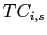,
 ) and total biomass (
) and total biomass ( ,
,
 ) time series data, we used a Schaefer surplus
production model to estimate total biomass and exploitation rate at
MSY (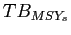 and
) time series data, we used a Schaefer surplus
production model to estimate total biomass and exploitation rate at
MSY (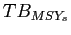 and  , respectively). Surplus production
of stock
, respectively). Surplus production
of stock  in year ,
in year ,  , is a commonly used measure of
stock productivity, representing the amount of catch that can be taken
while maintaining the biomass at a constant size, and can be
calculated as:
, is a commonly used measure of
stock productivity, representing the amount of catch that can be taken
while maintaining the biomass at a constant size, and can be
calculated as:
| 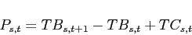 | (1) |
We fit a Schaefer surplus-production model, which is based on a logistic model of population growth to the catch and total biomass time series data. The predicted surplus production in each year in the Schaefer model is given by:
| 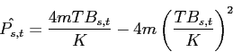 | (2) |
We estimated the model parameters ( and
and  ) using maximum
likelihood in AD Model Builder admb assuming that the
residuals
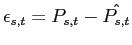 were normally
distributed. For the Schaefer model,
) using maximum
likelihood in AD Model Builder admb assuming that the
residuals
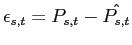 were normally
distributed. For the Schaefer model,  is simply
is simply  , and
the harvest rate that results in maximum sustainable yield,
, and
the harvest rate that results in maximum sustainable yield,  ,
is 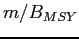. For model fitting, the carrying capacity parameter
,
is 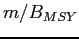. For model fitting, the carrying capacity parameter  was constrained to be less than twice the maximum observed total
biomass.
was constrained to be less than twice the maximum observed total
biomass.
Statistical analyses and plot generation were conducted with the R Environment for Statistics and Graphics R using the packages RODBC for database connectivity R:RODBC, KernSmooth for computing density kernels R:KernSmooth and ape to produce taxonomic dendrograms R:ape. Figure 1 was generated with the Generic Mapping Tools gmt.
Most assessments come from North America, Europe, Australia, New Zealand and the high seas, while there are few from regions such as Southeast Asia, South America, and the Indian Ocean (outside Australian waters) (Figure 1). Assessments were available for 31 LMEs, with the greatest number of assessed stocks coming from Northeast U.S. Continental Shelf (n=58), California Current (n=35), New Zealand Shelf (n=29), Gulf of Alaska (n=26), Celtic-Biscay Shelf (n=26), East Bering Sea (n=22) and Southeast U.S. Continental Shelf (n=20) (Figure 1).
Assessments for 159 species from 57 families and 20 orders are included in the database (Figure 2). Five taxonomic orders (Gadiformes (n=67), Perciformes (n=62), Pleuronectiformes (n=53), Scorpaeniformes (n=40) and Clupeiformes (n=36)) account for 80% of available stock assessments. Of these, Perciformes, the most speciose Order of marine fishes are in fact underrepresented in the database (46% of all marine fish species vs. 19% of all marine fish assessments), while the other four orders are taxonomically overrepresented: Clupeiformes (2.1% of marine fishes vs. 11% in the database), Gadiformes (3.3% of marine fishes vs. 21% in the database), Pleuronectiformes (4.5% of marine fishes vs. 17% in the database), Scorpaeniformes (8.5% of marine fishes vs. 12% in the database) (Figure 3).
Assessed marine fish stocks in the RAM Legacy database constitute a relatively small proportion of harvested taxa (24% of fish species from the SAUP database) and an even smaller proportion of marine fish biodiversity (1% of fish species in FishBase; Figure 3). In turn, catches from the SAUP database, which come from 649 species and 36 orders (Figure 3), represent only 5% of the 12339 species and 67% of the 54 different orders present in FishBase (Figure 3). The diversity of harvested marine invertebrates is clearly underrepresented in the stock assessment database and likely in stock assessments in general.
The median lengths of catch/landings, SSB, and recruitment timeseries were 38, 34, and 33 years, respectively (Figure 4). The time period covered by 90% of assessments is: catch/landings (1967-2007), SSB (1972-2007), recruitment (1971-2006), while that covered by 50% of assessments is: catch/landings (1983-2004), SSB (1985-2005), recruitment (1984-2003) (Figure 4).
The three most common assessment methods were Statistical catch-at-age/length models (n=164), Virtual Population Analyses (n=91) and Biomass dynamics model (n=44). Regionally, Virtual Population Analysis (VPA) is still the most common assessment model for European stocks (71% of 63 assessments), Canada (59% of 22 assessments) and Argentina (83% of 6 assessments), whereas statistical catch-at-age and -length models are more common for the United States (66% of 139 assessments), Australia (81% of 16 assessments) and New Zealand (76% of 29 assessments).
Biomass- or exploitation-based reference points were available for
256 (81%) and
221 (69%)
assessments, respectively. The most commonly reported biomass-based
BRPs relate to biomass at MSY (e.g.  ), to ``limit'' biomass
(e.g. 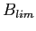, a biomass level above which stocks should be
maintained) and to ``precautionary approach'' biomass (e.g.
), to ``limit'' biomass
(e.g. 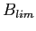, a biomass level above which stocks should be
maintained) and to ``precautionary approach'' biomass (e.g.  ,
a biomass level which provides an additional buffer to account for
uncertainty). Biomass and exploitation of United States' stocks under
the management of NMFS must follow MSY-based reference points whereas
other fisheries agencies use different BRPs.
,
a biomass level which provides an additional buffer to account for
uncertainty). Biomass and exploitation of United States' stocks under
the management of NMFS must follow MSY-based reference points whereas
other fisheries agencies use different BRPs.
Overall, 57% of stocks are estimated
to be below their biomass-related MSY BRP, that is
 ,
and 29% are estimated to be above
their exploitation-related MSY BRP,
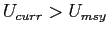
(n=239 stocks total; Figure 5).
Of the stocks for which biomass is currently estimated to be below
,
and 29% are estimated to be above
their exploitation-related MSY BRP,
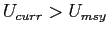
(n=239 stocks total; Figure 5).
Of the stocks for which biomass is currently estimated to be below
 , 55% have had their
exploitation rate reduced below
, 55% have had their
exploitation rate reduced below  , suggesting potential for
recovery (Figure 5). The remaining
45% of these stocks however,
still have excessive exploitation rates (Figure 5).
On a positive note, 43% of all stocks are
estimated to be above
, suggesting potential for
recovery (Figure 5). The remaining
45% of these stocks however,
still have excessive exploitation rates (Figure 5).
On a positive note, 43% of all stocks are
estimated to be above  , and
91% of the stocks above
, and
91% of the stocks above
 also have
also have  below
below  .
.
The status of exploited marine stocks, as estimated from biomass- and
exploitaion-BRPs, varied widely depending on the management body
(Figure 6). Most European stocks (managed by
ICES) have biomasses less than  (79%), and over half of these
stocks (61%) still
have exploitation rates exceeding
(79%), and over half of these
stocks (61%) still
have exploitation rates exceeding  . Canadian stocks (managed
by DFO) also had low biomass (79%
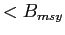), but all but one of these has had its exploitation rate
reduced below
. Canadian stocks (managed
by DFO) also had low biomass (79%
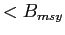), but all but one of these has had its exploitation rate
reduced below  . In contrast, about half
(21%) of U.S. stocks (managed by
NMFS) are estimated to still be above
. In contrast, about half
(21%) of U.S. stocks (managed by
NMFS) are estimated to still be above  , and of the
40 stocks that are below
, and of the
40 stocks that are below  65% have exploitation
rates below
65% have exploitation
rates below  (Figure 6). In the New
Zealand and Australian waters, stocks managed by MFish and AFMA are
above
(Figure 6). In the New
Zealand and Australian waters, stocks managed by MFish and AFMA are
above  in 21% and
42% of cases, respectively. For
the stocks grouped as ``Atlantic'' in Figure 6 we
found that 6 of the
10 ICCAT stocks and
6 of the
10 of NAFO stocks were below
in 21% and
42% of cases, respectively. For
the stocks grouped as ``Atlantic'' in Figure 6 we
found that 6 of the
10 ICCAT stocks and
6 of the
10 of NAFO stocks were below  .
.
In its latest State of the World Fisheries and Aquaculture
FAO:sofia, the FAO reports that 20% of stocks are
underexploited, 52% are fully exploited, 19% are overexploited, 8%
are depleted and 1% are recovering. While direct comparison with
these categories is difficult, we estimate that almost 60% of
assessed stocks are below the biomass reference point that maximises
their yield. Almost half of stocks that are below  still
experience exploitation rates that are above those that would maximise
yield.
still
experience exploitation rates that are above those that would maximise
yield.
Even in developed countries, however, not all stocks are assessed. For example, in 2007, of the 528 fish and invertebrate stocks recognized by the National Marine Fisheries Service (NMFS), only 179, or slightly over one-third, were fully assessed NMFS:2008:status. An assessment by the European Environment Agency (EEA) in 2006 indicated that the percentage of commercial landings obtained from assessed stocks ranged between 66-97 percent in northern European waters and 30-77 percent in the Mediterranean eea:2009:status. The New Zealand Ministry of Fisheries reports the status of 117 stocks or sub-stocks out of a total of 628 stocks managed under New Zealand's Quota Management System NZMF:2009. In Australia, 98 federally managed stocks have been assessed Wilson:etal:2009:status out of an unknown total. The extent to which stocks are assessed elsewhere in the world is generally lower Mora:etal:2009:PLoSBiol.
Stock assessment outputs (e.g. biomass time series), which constitute the majority of the new RAM Legacy database are model estimates, not raw data. The uncertainty associated with these estimates should be carried forth in subsequent analyses. Although the database structure allows for inclusion of estimates of uncertainty (standard errors, 95% credible/confidence intervals), uncertainty estimates for time series data were typically missing from assessments and hence were not included in the database. As with any analysis, clearer inference on the strength of a signal is available when all uncertainty in the data is carried forth.
BRPs derived from surplus production models are to be interpreted with great care. For stocks with both assesment-derived and Schaefer-derived BRPs, we found that estimates from surplus production models were systematically higher than those obtained from assessments. This discrepancy stems from the fact that in the Schaefer surplus production model, MSY occurs at 50% of the carrying capacity whereas in most age-based assessment models, yield is maximised at a lower fraction of the carrying capacity. The more flexible Pella-Tomlinson surplus production model allows for an asymmetric production function where MSY can occur at a wider range of relative biomass. Pella-Tomlinson models provided a better fit to data from individual stocks, which is to be expected given their greater flexibility and the inclusion of an additional parameter, however they performed no better in cross-validation than did the Schaefer model.
The original database developed by Ransom A. Myers was used to address a variety of ecological questions derived from stock-recruit relationships. This synthesis was possible because the VPA-type assessment models that constituted most of that database generated time series of stock and recruitment with relatively few a priori assumptions. Forward projection methods generally specify the form of the stock-recruit relationship, and in many cases even fix parameters (infinitely dense point prior) such as steepness. Stock-recruitment ``data'' from such models, are clearly inappropriate for straightforward meta-analysis. In general, as more assessments incorporate some type of prior information from other stocks or species Hilborn:Liermann:1998:reviews, there is less stock-specific information available for future meta-analysis Minte-Vera:etal:2005:cjfas. One solution is for stock assessments to report not only best estimates of parameters based on all available data, but also stock-specific parameter estimates that do not incorporate prior information from other stocks or species.
New stocks will continue to be added to the RAM Legacy database, particularly freshwater and anadramous populations (the Salmonidae constituted 45% of the stocks in the original Myers Stock Recruitment Database), and updated assessments for already included stocks. We hope that future versions of the database will also include timelines of management actions per stock, as well as age-varying and length-varying data such as maturity ogives and age-disaggregated natural mortality. Depending on availability, subsequent releases of the database could also include estimates of assessment uncertainty. Future database products will include management-agency-level reports containing summaries of all stocks within their remit. The development of a standard for assessment reporting at the management agency level would greatly assist in the acquisition of new assessments, and hence to ensure that the database remains current. For example, ICES assessments have a very regular standard, including agreed-upon reference points and regular estimate reporting. This makes the process of data collation much more routine than unstandardized documents where the recorder trawls through a report for the relevant information. ICES also has a central database of assessments for stocks of the region. Certainly different stocks and regions require different formats but basic output tables, consisting of total and spawning biomass, recruitment, catch/landings, estimated fishing mortality over vulnerable age groups, associated measures of uncertainty, and commonly-used reference points would streamline the process immensely. A process whereby the assessment spreadsheets are filled out at each assessment meeting would facilitate the process even further and be the least error prone method. In return, the assessment scientists can access results for a global collation of assessments to further their own research initiatives in population assessment and management. The ultimate goal is to provide a comprehensive stock assessment database for researchers to use results from multiple regions to assist in their own applied and fundamental research in population ecology, fisheries science, and conservation biology.
| Country/Ocean | Management Body | Acronym | No. stocks |
|---|---|---|---|
| Australia | Australian Fisheries Management Authority | AFMA | 16 |
| Multinational | Commission for the Conservation of Antarctic Marine Living Resources | CCAMLR | 1 |
| Argentina | Consejo Federal Pesquero | CFP | 6 |
| South Africa | South African national management | DETMCM | 14 |
| Canada | Department of Fisheries and Oceans | DFO | 22 |
| Multinational | Inter-American Tropical Tuna Commission | IATTC | 2 |
| Multinational | International Commission for the Conservation of Atlantic Tunas | ICCAT | 10 |
| Multinational | International Council for the Exploration of the Sea | ICES | 63 |
| Peru | Instituto del Mar del Peru | IMARPE | 1 |
| Multinational | Indian Ocean Tuna Commission | IOTC | 1 |
| Multinational | International Pacific Halibut Commission | IPHC | 1 |
| New Zealand | Ministry of Fisheries | MFish | 29 |
| Multinational | Northwest Atlantic Fisheries Organization | NAFO | 8 |
| USA | National Marine Fisheries Service | NMFS | 139 |
| Russia | Russian Federal Fisheries Agency | RFFA | 2 |
| Multinational | South Pacific Regional Fisheries Management Organization | SPRFMO | 1 |
| Multinational | Unknown management body | UNKNOWN | 1 |
| USA | US state-level management | US State | 3 |
| Multinational | Western and Central Pacific Fisheries Commission | WCPFC | 4 |
=7.5in
Figure 1. Global map of Large Marine Ecosystems (LMEs) and
high seas areas (ovals) showing the number of stock assessments present in the database for each area.
Figure 2. Taxonomic coverage of assessed marine species present in the
RAM Legacy database. The circle located near the middle of the circular
dendrogram represents kingdom Animalia and each subsequent branching
represents a different taxonomic group (Kingdom to Phylum to Class to
Order to Family to Genus to Species). The width of each line is
proportional to the square root of the number of assessments in the
database. The outermost lines represent species and the number of
lines is the number of assessments for each species. The names of
multi-assessment species are not repeated on the outermost portion of
the dendrogram but continue counter-clockwise from the first entry.
Note that branch lengths are chosen for graphical purposes and do not
convey phylogenetic distance.
Figure 3. Comparison of the taxonomic diversity of marine
species as provided by FishBase (top panel), the coverage of catch
data as provided by the Sea Around Us Project (SAUP) database (middle
panel) and the new RAM Legacy database (bottom panel). To facilitate the
identification of the taxonomic groups that are not presented in the catch
and assessment data, the FishBase branching pattern of the spoked dendrogram is
maintained to generate the other two dendrograms.
Figure 4. Orca plots showing the temporal coverage of (A)
catch/landings, (B) spawning stock biomass and (C) recruitment. The
temporal coverage for individual assessments is represented by thin
alternating black and grey horizontal lines in the main panels. Orca
plots are named because their distinctive shape is uncannily similar
to the individually-identifiable nicked and notched dorsal fins of
killer whales (orcas). Thick horizontal lines at the base of each main
panel represent the time periods which are present in 90% (black) and
50% (grey) of all series for that data type. Subfigure histograms
contain the frequency of occurrence of the various timespans without
reference to time period. Solid and long-dash vertical lines within
the subfigures represent the median,
2.5% and 97.5% quantiles, respectively.
Figure 5. Current exploitation rate versus current biomass for 241
individual stocks. Exploitation is scaled relative to that which
should allow maximum sustainable yield ( ); biomass is scaled
relative to
); biomass is scaled
relative to  . Shades of grey indicate probability of occurrence as
revealed by a kernel density smooth function. Solid circles indicate
. Shades of grey indicate probability of occurrence as
revealed by a kernel density smooth function. Solid circles indicate
 and
and  that were obtained directly from assessments; open circles
indicate that they were estimated from surplus production models.
that were obtained directly from assessments; open circles
indicate that they were estimated from surplus production models.
Figure 6. Current exploitation rate versus biomass for
individual stocks grouped by management unit. The panel labelled
``Atlantic'' comprises ICCAT and NAFO. Plot details as in
Figure 6.
This document was generated using the LaTeX2HTML translator Version 2008 (1.71)
Copyright © 1993, 1994, 1995, 1996,
Nikos Drakos,
Computer Based Learning Unit, University of Leeds.
Copyright © 1997, 1998, 1999,
Ross Moore,
Mathematics Department, Macquarie University, Sydney.
The command line arguments were:
latex2html fishandfisheries-SUBMISSION-August-2010.tex -split 0
The translation was initiated by Stock-recruitment database administrator on 2010-08-03